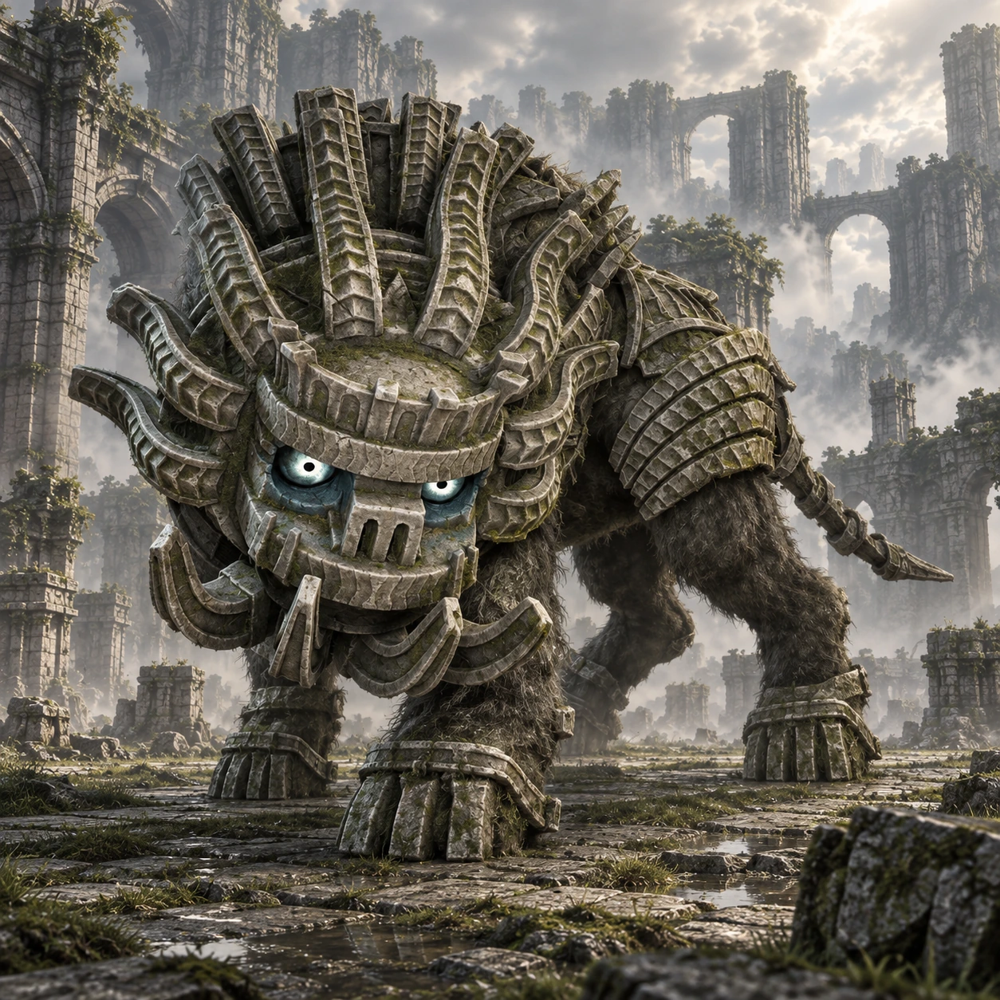

Dois nomes, duas origens
“Cerberus” é um nome de desenvolvimento. “Cenobia” é o nome popular entre os fãs, não um nome próprio apresentado durante o jogo.

Colosso 14 · Terras Proibidas
O silêncio das ruínas se desfaz.
Cenobia guarda uma cidade escondida entre montanhas. Suas investidas transformam colunas e passarelas em partes de um percurso em constante mudança.
Conheça o gigante01 / O gigante
Baixo, compacto e coberto de placas, Cenobia tem a silhueta de uma fera preparada para avançar. O corpo se projeta para a frente em ataques rápidos e insistentes.
O tamanho contrasta com a amplitude das ruínas. O encontro se espalha por pilares, plataformas e paredes, obrigando Wander a olhar além do chão.
*Altura e comprimento seguem as estimativas da Colossipédia, citada nas fontes. Os valores variam entre fontes e escalas; são referências aproximadas, não medidas oficiais confirmadas.
02 / O caminho
Viaje para noroeste, seguindo o vale entre montanhas e os vestígios de colunas pelo caminho.
Na caverna com água, deixe Agro e continue a nado. Do outro lado, a passagem leva a uma cidade em ruínas, tomada por vegetação e estruturas elevadas.
Abrir mapa das Terras Proibidas03 / Um olhar mais atento
“Cerberus” é um nome de desenvolvimento. “Cenobia” é o nome popular entre os fãs, não um nome próprio apresentado durante o jogo.
Pequenos canais atravessam a cidade. São detalhes da arquitetura que podem passar despercebidos durante a perseguição.
Cenobia e Celosia compartilham o porte compacto e as investidas. As arenas, porém, dão ritmos bastante diferentes aos encontros.
04 / O encontro
Algumas pistas para começar, deixando a descoberta da luta com você.
Dicas gerais para o modo Normal. A ficha não detalha todos os pontos vitais nem o desfecho do confronto.
Ficha baseada em registros da comunidade e guias de jogo. A arte é uma interpretação visual, não uma captura do jogo.